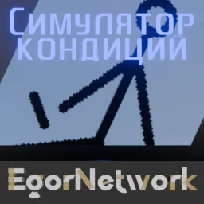

Скачивание игр
Здесь вы можете скачать игры от EgorNetwork.

Симулятор Кондиций: Classic
Культовая легендарная игра-кликер, первый проект компании EgorNetwork. Сделана в Clickteam Fusion 2.5.
Статус: Опубликовано. Long-Term Support
Симулятор Кондиций: Recompiled
Сиквел легендарной игры про кидание кондиций, сделанный в Unity.
Статус: Начало разработки.
Катакомбы
Игра, цель которой изучать бесконечный лабиринт, собирать ключи и искать торговца чтобы покупать у него оружие. Стоп, а зачем оно глубоко под землёй...
Статус: В разработке.
Релиз 27 апреля (может быть).
Телики
Перемещайтесь по плоскости из мониторов, собирайте бонусы и находите выход.
Статус: Начало разработки.